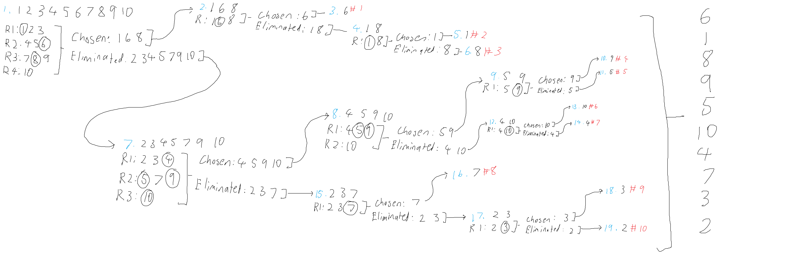

Ranker
What is it?
A tool to help you rank a list of things. I made it before I knew how to make webapps, so
this one was made using Unity and C#. It was made to help my friends and I determine a priority
list of items in Minecraft (hence the data set). I may make this usable through the browser on
this site at some point.
How it Works
It takes your data set and presents each item to you in randomised batches. You then pick any
number of those items (I generally recommend picking half or less of each batch) to prioritise,
compared to the other items in the batch. After you get through every batch, your choices are split
into two different sets, based on which ones were and were not picked. You are then presented with
randomised batches of the chosen items from the first round. This repeats on each chosen until batch
sizes are reduced to 1, after which, they are added to the final list in order. This then repeats for
the items that were not chosen. This process will eventually generate an ordered priority list.
As with any software solution, there are pros and cons when comparing different approaches. This is no
exception. There are other rankers out there (I specifically have a Pokemon one in mind). Mine ends up
ranking the highest-priority items first, while the other rankers I've seen rank them last. The advantage
of mine is that you can stop at any point in the ranking process and have a workable list. Best for top #
lists or when you only need a specific number of things ranked. The main disadvantage of this approach is
that it takes a bit longer if you intend to build a comprehensive list out of a very large data set.
Example trace:
Blue numbers represent the order to follow, red numbers represent the final ranking
